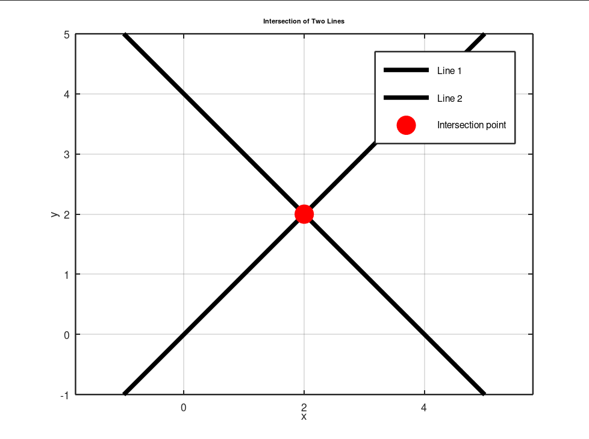
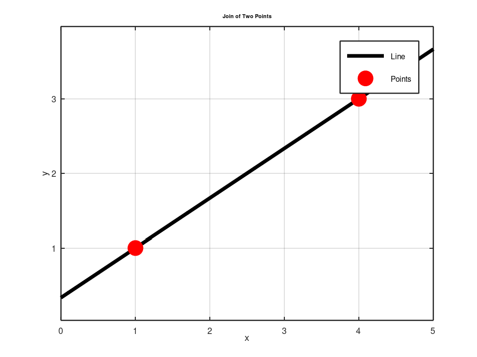

CourseworkSIMULATION
Geometry of rigid motion
The mathematics under every robot model, built up one homework at a time: points and lines in homogeneous coordinates, rotations about arbitrary axes, Plücker lines, and finally screw theory, each derived by hand and animated in Octave.
- Context
- Basic Robotics (S7) homework
- Dates
- Oct – Dec 2025
- Work
- Individual
- Tools
- Octave · LaTeX
01Points and lines in homogeneous coordinates
- A line is a 3-vector
lwithlᵀx = 0. Two lines meet atx = l × m, and two points are joined byl = p × q: the same cross product both ways. - If points move as
x′ = Hx, lines must move asl′ = H⁻ᵀ l, which I proved from the incidence relationx′ᵀl′ = xᵀl = 0. - Rotation about a pivot
c: translate to the origin, rotate, translate back. Animated for a stick and for a line not through the origin, with linear interpolation of the angle.


02Chains of frames
The pose of the Franka end-effector G in the base frame A is the head-to-tail product of the transforms between
successive joint frames, T_G/A = T_B/A T_C/B T_D/C T_E/D T_F/E T_G/F: the structure that every
forward kinematic model later reuses.
03Rotation about any 3D line
For a unit axis û through the origin, Rodrigues' formula gives the rotation in closed form:
R = I + sin θ [û]ₓ + (1 − cos θ) [û]ₓ²
For a line through a point p₀ that misses the origin, the same rotation is conjugated by a translation,
giving one homogeneous matrix H = [R, (I − R) p₀; 0, 1], checked on numeric examples.
04Plücker lines and nested rotations
- A 3D line becomes a 6-vector
L = (u, m)with momentm = p × u. It does not depend on the point chosen on the line, and the point closest to the origin isu × m. - Rotation by θ about a Plücker line:
H = [R(u, θ), (I − R)(u × m); 0, 1]. Lines themselves move with the 6×6 matrix[R, 0; [t]ₓR, R]. - The animation above composes both: line A turns about line B while point Q turns twice as fast about the moving line A, leaving the knot-like trace.
05Screw theory: a two-link spatial robot
Each revolute joint is a unit twist ξ = (ω, v) with v = q × ω for a point q
on its axis. The forward kinematics is a product of matrix exponentials, here for two orthogonal joints (about X, then Z):
H(θ) = exp([ξ₁]θ₁) · exp([ξ₂]θ₂), with [ξ] = [[ω]ₓ, v; 0, 0]This product-of-exponentials form is the one I then used for the industrial arms in Kinematics of serial arms.